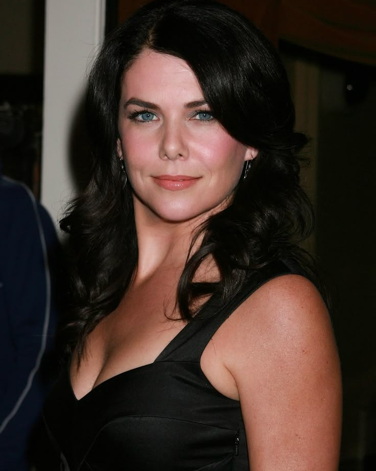
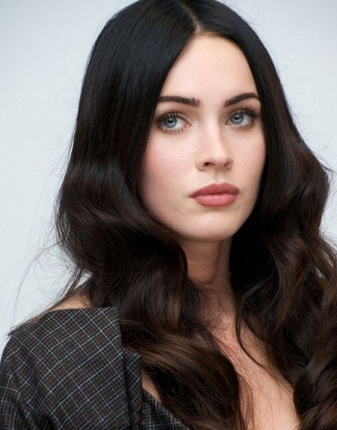
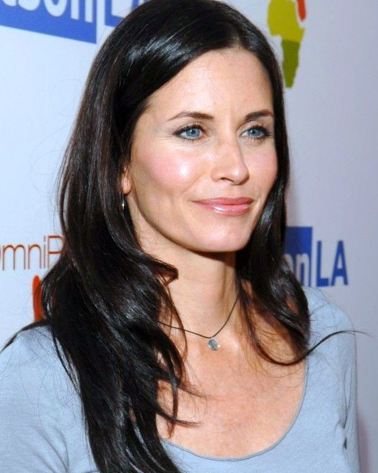
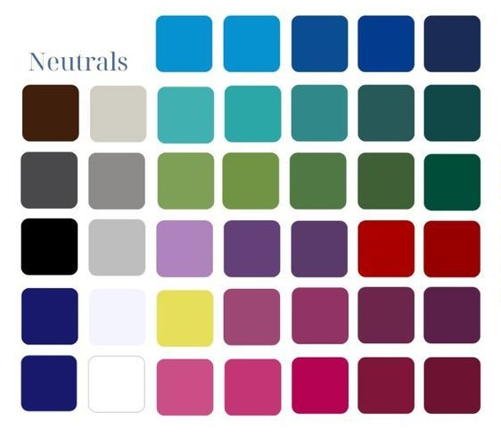
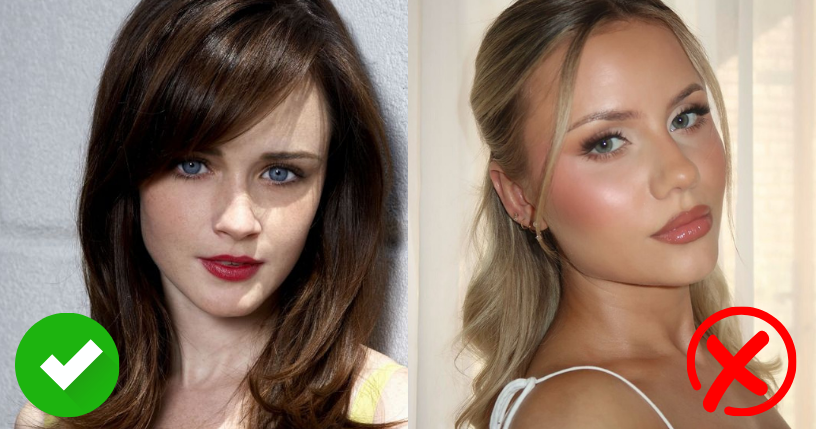
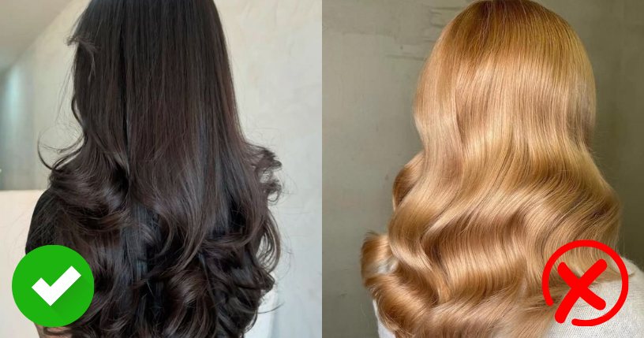
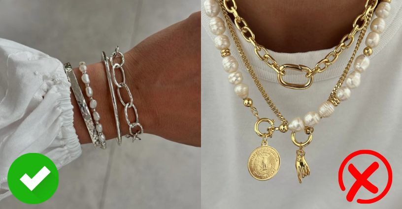

Características generales de la estación Invierno
- Subtono de piel frío: desde porcelana hasta oliva o marrón profundo, pero siempre con matices azulados o rosados. Suelen tener una piel que no se broncea fácilmente o lo hace con un matiz grisáceo.
- Cabello oscuro: castaño oscuro, negro o negro azulado, generalmente sin reflejos cálidos.
- Ojos intensos y claros: azul profundo, verde frío, gris acero, marrón oscuro o negro. Se caracterizan por tener un brillo definido, como si estuvieran delineados.
- Contraste alto: hay una diferencia marcada entre el tono de piel, cabello y ojos, lo que genera una apariencia poderosa y sofisticada.



Tipos de invierno
Dentro de esta estación, existen subcategorías que ayudan a afinar aún más la elección de colores.
1- Invierno profundo:
- Rasgos oscuros e intensos.
- Paleta rica en colores profundos como borgoña, azul marino, verde oscuro.
- Alto contraste, pero más apagado que otros inviernos.
2- Invierno frío:
- Subtono frío muy marcado.
- Ideal para colores puros, fríos y saturados.
- Toleran el blanco óptico, el negro puro y el rojo verdadero.
3- Invierno brillante:
- Alto contraste y ojos brillantes.
- Aceptan colores muy saturados sin perder armonía.
- Paleta parecida a la de Primavera brillante, pero más fría.
Paleta de colores ideal para Invierno
La paleta Invierno se caracteriza por ser fría, intensa y contrastante. Estos colores no deben ser ni
cálidos ni apagados: deben transmitir claridad, fuerza y elegancia. Algunos ejemplos ideales:

Se recomienda evitar tonos cálidos (como durazno, beige, dorado o marrón cálido) y colores muy
suaves o empolvados, que pueden restar fuerza a tu rostro.
Maquillaje para Invierno
- Base: beige rosado o neutro frío, según el tono de piel.
- Rubor: rosa frío, fucsia suave, ciruela.
- Sombras: gris oscuro, azul noche, negro, plateado, púrpura frío.
- Labiales: rojo cereza, vino frío, fucsia, rosa chicle frío.

Evitar los tonos cálidos como coral, durazno, terracota o labiales nude cálidos, que pueden desentonar.
Coloración de cabello para Invierno
- Negro azabache o negro azulado
- Castaño muy oscuro
- Reflejos en azul oscuro, ciruela o borgoña frío

Evitar rubios dorados, rojizos o mechas caramelo
Accesorios para Invierno
- Plata
- Oro blanco
- Perlas blancas

El oro amarillo o los tonos tierra pueden verse demasiado cálidos o desalineados con tu energía visual.